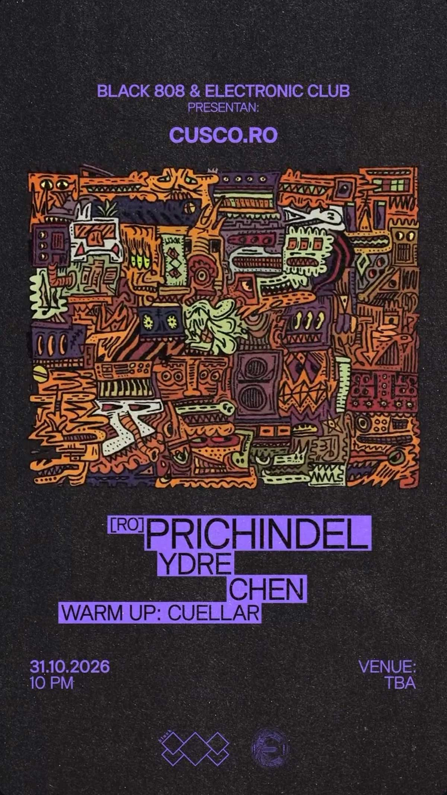

CUSCO.RO
fecha: 31/10/26 hora: 10pm
lugar: Casa Colonial,
Arco Santa Ana (frente a Loki), Cusco

entradas: PASSLINE

BLACK 808 × ELECTRONIC CLUB PRES.
PRICHINDEL (RO) 🇷🇴
Entre ritmos sutiles, grooves envolventes y una constante exploración sonora, @ctlnprchndl ha construido una identidad que refleja la esencia y evolución del sonido rumano.
Su música encuentra el equilibrio entre la energía y la sensibilidad, creando una conexión natural con la pista, donde cada sonido forma parte de una experiencia en constante movimiento.
Este 31 de octubre, CUSCO.RO nos reúne nuevamente para recibir por primera vez en Cusco a uno de los nombres consolidados de la escena electrónica rumana, cofundador de Tonomat Records.
LINE UP
PRICHINDEL (RO) 🇷🇴
@ydre444 · @chen_chua_l · @cuellar____
ARTWORK BY @janpaulmueller
31.10.2026 · CUSCO, PERÚ
VENUE TBA
🎟️ PREVENTA — S/ 35
🎟️ PUERTA — S/ 50 BLACK 808 × ELECTRONIC CLUB
LINE-UP:
Prichindel
Ydre
Chen
Cuellar warm up